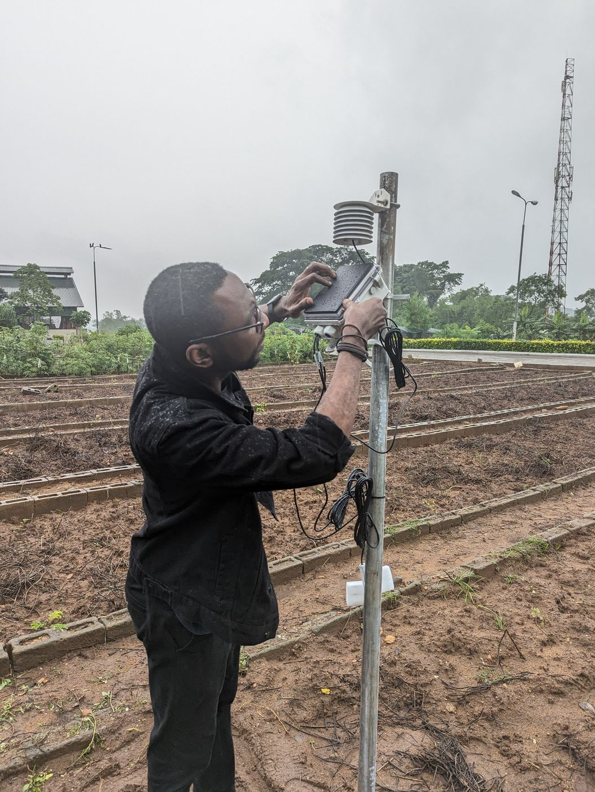

Fellowship programme
THRIVE
Predicting and improving cassava yields with in-field IoT sensors, drone and satellite imagery, and machine learning. THRIVE is my five-year Royal Academy of Engineering Engineering for Development Research Fellowship, delivered with the partner institutions listed below.
It includes a systematic review of machine learning methods for cassava yield prediction, now in preparation.